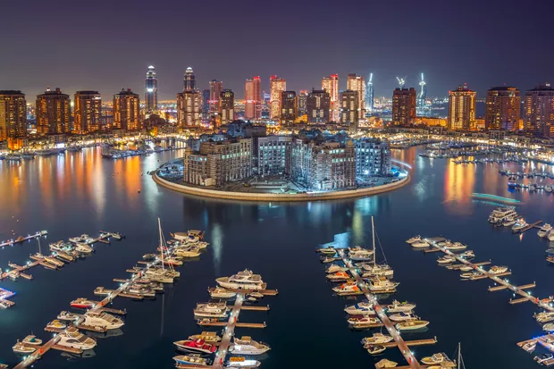

Sejam bem-vindos ao Catar
- Catar é um país árabe, conhecido oficialmente como um emirado do Oriente Médio, ocupando a pequena Península do Catar na costa nordeste da Península Arábica. Faz fronteira com a Arábia Saudita ao sul,e o Golfo Pérsico envolve o resto do país. Um estreito do Golfo Pérsico separa o Catar da nação insular vizinha, o Bahrein.
- Foi um protetorado britânico até ganhar a independência em 1971. Desde então, tornou-se um dos estados mais ricos da região, devido às receitas oriundas do petróleo e do gás natural (possui a terceira maior reserva mundial de gás).Antes da descoberta do petróleo, sua economia era baseada principalmente para a extração de pérolas e comércio marítimo.
- Com uma população estimada em 2,8 milhões de habitantes, apenas 313 mil são nativos catarianos. Os demais são trabalhadores estrangeiros, especialmente de outras nações árabes (13%), Subcontinente indiano (Índia 24%, Nepal 16%, Bangladesh 5%, Paquistão 4%, Sri Lanka 2%), Sudeste Asiático (Filipinas 11%) e demais países (7%). Também é um dos poucos países do mundo em que seus cidadãos não pagam impostos
Estádios do Qatar
Estádio al Bayt
cidade de Al Khor
60 mil pessoas
Internacional Khalifa
Doha, Catar
40.000 pessoas
Al Janoub
sul de Doha
40.000 pessoas
Ahmad bin Ali
Al Rayyan
40.000 pessoas
Al-Thumana
Doha, Catar
40.000 pessoas
Estádio Cidade da Educação
Cidade da Educação
45.000 pessoas
Estádio 974
doha, catar
40.000 pessoas
Lusail
Lusail
80.000 pessoas